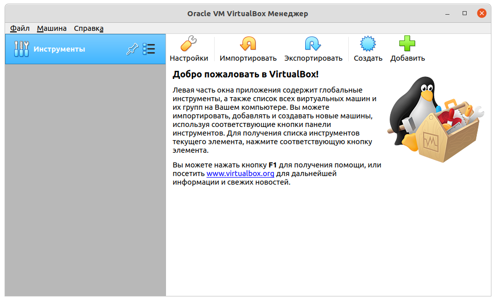

1. Подготовка рабочего окружения#
Введение#
Для практических занятий вам понадобится настроенное рабочее окружение – машина с UNIX-подобной ОС и установленными программами. В роли ОС выбрана Ubuntu. Она популярна, удобна в использовании и укомплектована необходимыми программами. Технически Ubuntu от других дистрибутивов отличается рабочим столом GNOME и менеджером пакетов apt. Выбор дистрибутива не так важен, так как практические занятия будут проходить в текстовом терминале.
Цель этого раздела – подготовить машину с ОС Ubuntu для выполнения последующих практических заданий.
В настройку рабочего окружения входят следующие действия:
Загрузка дистрибутива с ОС Ubuntu.
Загрузка и установка VirtualBox.
Создание пустой виртуальной машины.
Установка ОС на виртуальную машину.
Установка расширения VirtualBox.
Настройка виртуальной машины.
Установка дополнительных пакетов программ.
Если в помещении, где проходят занятия, нет доступа к сети или ограничены скорость соединения или объем входящего трафика, то следует заранее загрузить и принести дистрибутивы с VirtualBox и Ubuntu.
Загрузка дистрибутива с ОС Ubuntu#
Дистрибутив с Ubuntu доступен для скачивания на сайтах ubuntu.ru и ubuntu.com. На 2023 год доступны версии 22.04.3 LTS (Jammy Jellyfish) и 23.04 (Lunar Lobster). Дистрибутив загружается под выбранную аппаратную платформу. Платфома определяется архитектурой и разрядностью процессора (x86 или x64). Тип аппаратной платформы прописывается в имени скачиваемого файла и в гиперссылке на него.
Warning
Обычно при загрузке платформа выбирается автоматически и совпадает с платформой вашего компьютера. Если вы устанавливаете систему на другой компьютер, следует проверить совместимость дистрибутива с ним.
Выберите ту платформу, которая вам точно подойдет. Если ваш компьютер использует 32-битный процессор, то не следует скачивать 64-биную версию дистрибутива. Скачиваемый файл имеет формат и расширение iso – образ оптического диска. Он понадобится для установки ОС на машину.
Загрузка и установка VirtualBox#
Вы можете установить Ubuntu на домашний настольный компьютер или ноутбук параллельно уже существующей ОС. Но это подвергает ее риску. Поэтому сделайте по-другому – разверните дистрибутив не на настоящей машине, а на виртуальной. Виртуальная машина представлена файлом и может быть перемещена и запущена на другом компьютере.
Для создания и запуска виртуальной машины вам понадобится программа VirtualBox. Она доступна бесплатно и свободна для использования. Загрузите и установите ее на те компьютеры, на которых вы планируем запускать виртуальную машину с Ubuntu.
Создание пустой виртуальной машины#
Минимальные системные требования к машине с Ubuntu 22.04 и 23.04 совпадают и составляют:
двухядерный процессор с тактовой частотой 2 ГГц и выше;
4 Гб оперативной памяти;
25 Гб свободного места на диске;
не обязателен, но будет лучше, если есть доступ в Интернет.
25 Гб места на диске займет ОС со своим набором программ. Для пользовательских программ и данных также потребуется дополнительная памяти, поэтому показатель следует увеличить хотя бы до 50 Гб.
На некоторых машинах может быть отключена аппаратная виртуализация, что не позволит создать виртуальную машину. Ее можно включить из BIOS. Название опции зависит от поддерживаемой технологии виртуализации.
Запустите программу VirtualBox. Перед вами появится окно программы без списка виртуальных машин.
В появившемся окне нажмите кнопку Создать на панели инструментов.
Появится диалоговое окно “Создать виртуальную машину”.
На первом шаге создания виртуальной машины выберите имя и тип ОС.
В нашем случае это Linux и Ubuntu (64-bit).
Альтернативой может быть Linux и Ubuntu (32-bit).
Имя может быть любым, в этом конкретном случае было выбрано “Ubuntu 21.04”.
Переходите на следующий шаг нажатием кнопки Далее.
На втором шаге укажите объем доступной для машины оперативной памяти. По умолчанию, программа предложит 1 Гб. Но лучше выбрать 2 Гб и более, так как ресурсов на основной машине обычно хватает. Это значение можно изменить позже в настройках.
На третьем шаге создайте новый виртуальный жесткий диск. Поэтому выберите переключателем соответствующий пункт.

Последующие шаги связаны с настройкой виртуального жесткого диска.
Здесь укажите первый пункт – VDI (VirtualBox Disk Image).
Здесь укажите формат хранения диска – динамический или фиксированный. Выберите любой из них.
На последнем шаге настройки диска выберите наибольший размер жесткого диска. По умолчанию программа предложит 10 Гб. Но этот объем быстро займется данными. Поэтому выберите как можно больше объема: от 50 Гб и более.
В основном окне программы появится новая виртуальная машина под именем “Ubuntu 21.04”.
Установка ОС на виртуальную машину#
Следующим шагом после создания виртуальной машины станет установка операционной системы.
Перед установкой примонтирует наш загруженный образ ubuntu-21.04-desktop-amd64.iso в оптический привод.
В реальности это выглядело бы как вставка диска в DVD-дисковод.
Для этого нажмите кнопку Настроить при выделенном в списке машине.
Появится диалоговое окно “Ubuntu 21.04 - Настройки”
В окне выберите Носители, Контроллер: IDE -> Пусто.
Нажмите на значок с диском и появится выпадающее меню.
В меню выберите команду Выбрать файл диска....
В появившемся диалоговом окне выберите файл с образом дистрибутива.
В настройках появится элемент с названием открытого файла образа.

Запустите машину, нажав кнопку Запустить.
Выполните инструкции установщика ОС.
В конце система попросит перезагрузки.
Выключите машину и перейдите в настройки Носители.
Удалите из оптического привода образ с установщиком Ubuntu.
Повторно запустите виртуальную машину.

Установка расширений VirtualBox#
Для улучшения удобства взаимодействия с виртуальной машиной установите дополнительное системное ПО от VirtualBox.
Примонтируйте к оптическому приводу файл VBoxGuestAdditions_6.1.16.iso.
Файл можно смонтировать двумя способами: через настройку Носители или главное меню запущенной машины Устройства -> Подключить образ диска Дополнений гостевой ОС...
Откроем программу Files с обозревателем файловой системы.
Ее ярлык в виде папки расположен на левой вертикальной панели рабочего стола.
Среди стандартных каталогов вы увидите примонтированный образ VBox_GAs_6.1.16 в виде каталога.
Откройте его и двойным щелчком мыши запустите файл autorun.sh.
Note
Эти же действия вы можем выполнить из эмулятора терминала.
Вызовите его горячими клавишами Ctrl+Alt+T.
Перейдите в каталог /media/sppo/VBox_GAs_6.1.16/ и запустите на выполнение файл autorun.sh командами
cd /media/sppo/VBox_GAs_6.1.16
./autorun.sh
После перезагрузки экран виртуальной машины развернется на все предоставленное ему пространство.
Настройка виртуальной машины#
По ходу работы с машиной понадобится перекидывать данные из основной машины в виртуальную и наоборот. Это можно делать двумя способами: через общий буфер обмена и обменный каталог).
Объедините системные буферы двух машин (виртуальной и основной) в один.
Включите опцию Двунаправленный, расположенную в меню Устройства -> Общий буфер обмена.
Установка дополнительных пакетов#
Установите дополнительные пакеты в систему, которые понадобятся для выполнения работ.
Пакет build-essential содержит набор инструментальных средств, библиотек и заголовочных файлов для сборки программ из исходных кодов.
Пакет manpages-dev содержит справочное руководство о системных функциях.
Текстовый редактор vim является улучшенной версией стандартного vi.
Он не входит в стандартный пакет, поэтому требует установки.
sudo apt update
sudo apt install build-essential
sudo apt install manpages-dev
sudo apt install vim
sudo apt install ncal # Календарь cal.
sudo apt install mc
sudo apt install htop
sudo apt install tmux
sudo apt install tree
sudo apt install zip